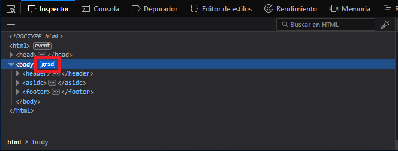
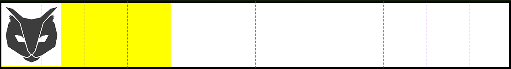
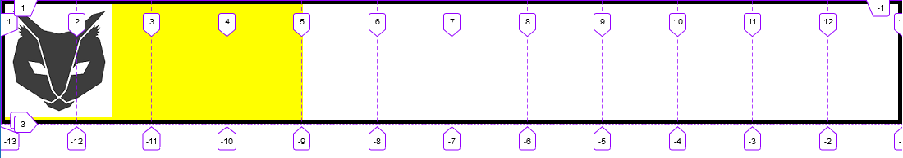

Las herramientas de desarrollo de firefox tienen un apartado para comprobar el funcionamiento de nuestro grid de forma muy visual. En el inspector podremos ver la etiqueta grid en las partes del código que estén maquetadas de esa forma, para verlo sólo tenemos que hacer click en esa etiqueta.

Al hacer click en la etiqueta, aparecerán unas líneas que mostrarán de forma visual la disposición del grid:

A la derecha del menú de desarrollo, en la pestaña disposición hay varias opciones:
- Superponer rejilla: Permite seleccionar el grid a visualizar.
- Mostrar número de línea: Muestra a qué número corresponde cada línea.
- Mostrar nombre de áreas: Muestra el nombre de cada zona (Si lo tiene).
- Extender líneas infinitamente: Por defecto las líneas llegan hasta la zona a la que afectan, al seleccionar esta opción las líneas no se limitarán.
Al numerar el grid podremos identificar más fácil a que línea corresponde en los atributos, para así poder modificarlo a nuestro gusto con más facilidad.
